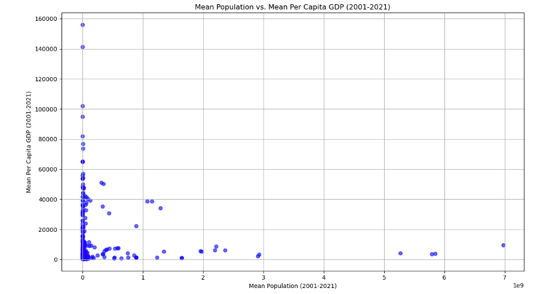

Machine Learning
This unit, proceeding unit 3 expanded upon the understanding of correlation and regression. Its emphasis lay in introducing linear regression and its application in modeling linear relationships. This included both a single independent and dependent variable linear relationship, as well as multiple independent variables with a single dependent variable linear relationship. Furthermore, the unit covered the utilisation of the Scikit-learn library, a pivotal tool in machine learning. Scikit-learn is a versatile machine learning library in Python, simplifying linear regression tasks with its efficiency and interpretability, particularly beneficial for beginners (Pedregosa et al., 2011). However, its limitations include assumptions of linearity, sensitivity to outliers, and challenges with multicollinearity and overfitting (James, et al, 2013). Despite this the overfitting can be addressed through regularisation techniques like Ridge and Lasso regression (Rosa, 2010).
In these two units, the creation of logical database designs, entity relationship diagrams, performing normalisation, and SQL scripting created a better understanding of handling data meant to be stored in a database. The importance of primary keys and foreign keys was also reinforced while bringing in the concept of relational databases.
To solidify the knowledge and skills gained in this unit a project on correlation and regression was undertaken. This project involved the following tasks:
Importing Packages and Data: Essential libraries such as `sklearn`, `matplotlib`, `pandas`, `numpy`, and `seaborn` were imported. GDP and population data from 2001-2021 were read into data frames.Data Preparation: The data were converted to numeric types, with linear interpolation applied to fill missing values. Mean GDP and population for each country over the period were computed.Data Cleaning: Duplicate entries were removed, and the datasets were merged based on country names.Analysis and Visualisation: A scatter plot was plotted to visualise the relationship between mean population and mean per capita GDP from 2001 to 2021.Correlation and Linear Regression: The Pearson correlation coefficient between mean population and mean per capita GDP was computed, followed by a linear regression analysis to determine the relationship between mean population and GDP.The scatter plot indicated that countries with higher populations tend to have a lower mean per capita GDP, suggesting an inverse relationship between population size and per capita economic output.
The Pearson correlation coefficient of -0.099 shows a weak negative correlation. The linear regression analysis resulted in a slope of approximately 6035, an intercept of about 45161294294.85, and an R-squared value of 0.52, indicating a moderate fit of the model.
James, G. et al. (2013) ‘Statistical learning’, Springer Texts in Statistics.15–57. DOI: http://dx.doi.org/10.1007/978-1-4614-7138-7_2
Pedregosa, F. et al. (2011) Scikit-Learn: Machine learning in Python, The Journal of Machine Learning Research. Available at: https://dl.acm.org/doi/10.5555/1953048.2078195 [Accessed 31 May 2024].
Rosa, G.J. (2010) ‘The elements of Statistical Learning: Data Mining, Inference, and prediction by Hastie, T., Tibshirani, R., and Friedman, J.’, Biometrics, 66(4): 1315–1315. DOI: http://dx.doi.org/10.1111/j.1541-0420.2010.01516.x